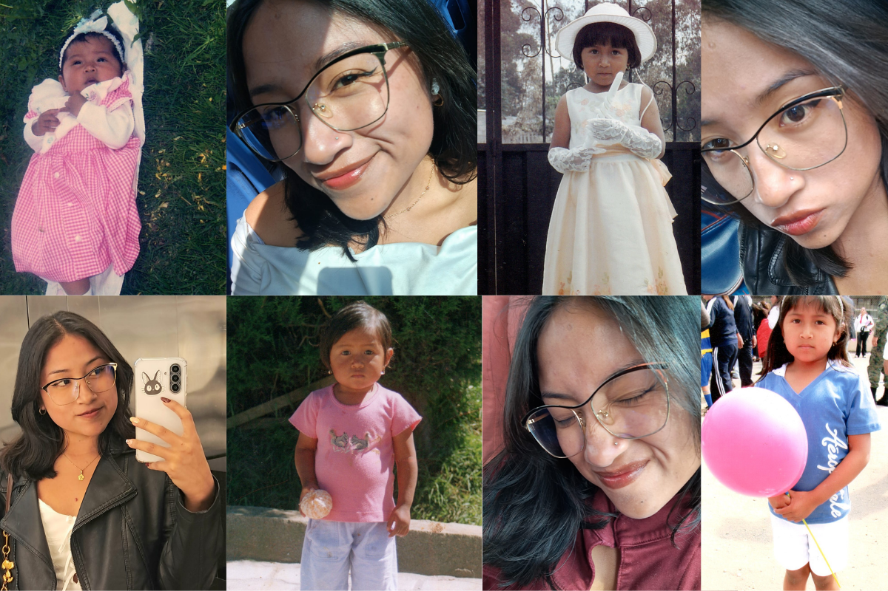

Actualmente me encuentro cursando el sexto semestre de la carrera de Negocios Digitales en la Universidad Politécnica Salesiana. Es una carrera relativamente nueva, pero la elegí debido a la variedad de materias que ofrece y a la forma en que cada una se complementa semestre tras semestre.
Antes de cumplir mis 20 años me realicé un tatuaje y dos perforaciones. El tatuaje lo comparto con mi hermano y tiene un significado muy especial, ya que me recuerda que, incluso en los momentos en los que me sienta perdida, siempre contaré con el apoyo incondicional de alguien.

Como dato curioso, tengo una pequeña cicatriz en el cachete izquierdo que me hice intentando trepar un árbol cuando era niña. Actualmente es una anécdota graciosa, pero en ese momento la herida era bastante profunda y la sangre no dejaba de salir. Lo peor de todo fue que ocurrió un día antes de un compromiso familiar, y probablemente por eso no aparezco en ninguna fotografía de ese día.
Desde pequeña fui muy consentida por mis padres, mi hermano y mis abuelos paternos. Al ser la primera niña después de cuatro primos hombres, crecí rodeada del amor y cariño de mi familia, especialmente por parte de mi familia paterna. Aunque, curiosamente, pasaba gran parte del tiempo enojada, algo que quedó reflejado en muchas fotografías de mi infancia.
No sé exactamente qué me espera en el futuro y tampoco tengo un camino completamente definido. Sin embargo, una de mis principales metas es poder viajar a diferentes países y, si es posible, trabajar en alguno de ellos. Sé que estar lejos de mi familia no será fácil, pero también tengo la certeza de que ellos me apoyarán en cualquier decisión que tome.